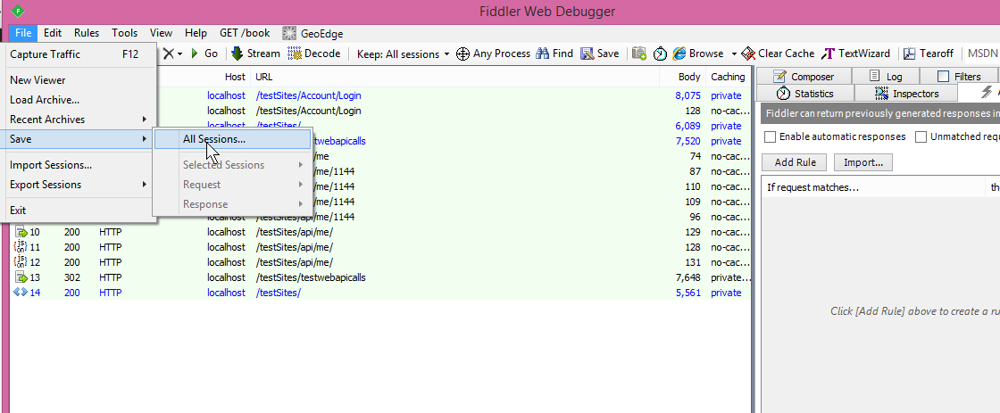
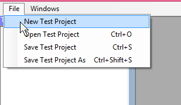
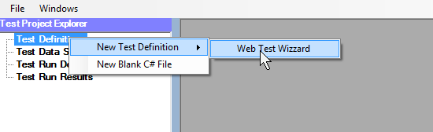
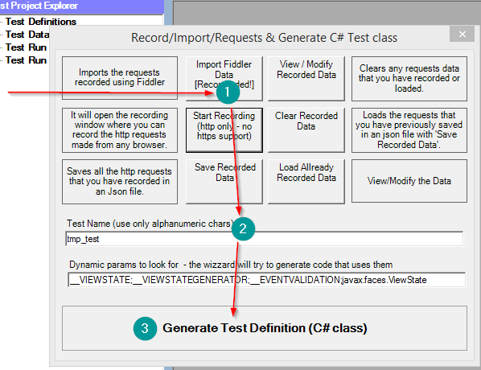
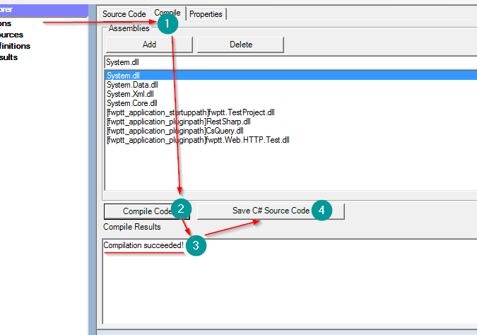

How to Record Requests and create a Test Definition
The V2 release switches towards supporting and using Fiddler as the default tool for recording the requests that are made, Fiddler is a mature tool that supports recording requests made over https
To Create a new project with a new test please start Fiddler and capture the http/https requests. once the requests are recorded you can remove the unnecessary requests and save all the requests using the File->Save->All Sessions menu action
Create a new project and save it.
Right Click on the Test Definition node and select New Test Definition->Web Test Wizzard
Using the Import Fiddler Data import the data that was saved earlier. Modify the name of the test and click on Generate Test Definition
The Test Definition source code editor window will open, there go to the compile tab and click compile code. Once the code compiles succesfully click on the "Save C# Source Code" button.
